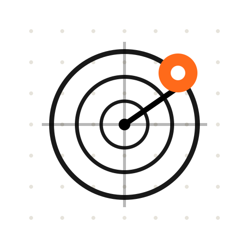

注意力雷達
Ashdata · Attention Radar
字體大小
文字對比
價格 × 指數 綜合疊圖
左軸 · 價格
右軸 · 指數
新聞注意力
新聞量
激增日
散度 · 敘事異常
散度
警戒線
價格 × 警報疊加
收盤價
散度突破日
門檻突破後 · 價格反應統計
各次突破日一覽
誰在領先 · 新聞 vs 價格
語料分類 · 近 7 天頭條
美股語料聲量排行 · 近 7 天（點擊切換標的）
Ashdata 注意力雷達 · 每 6 小時自動更新 · 數據僅供研究參考，非投資建議
GitHub